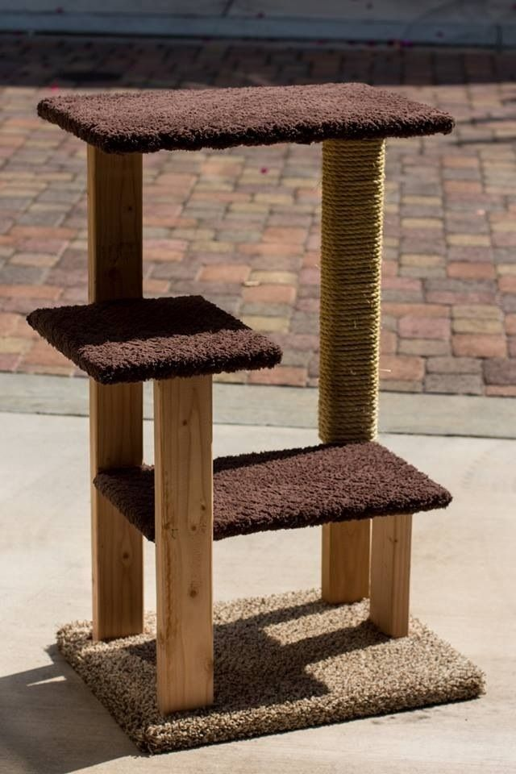

.png)
.jpg)
Project Page 
Making a cat tree is a fun way to create a special place for your cat to hang out at home. Cat trees double as scratching posts, so your cat is sure to enjoy the addition to your living space. For this simple cat tree project, you will need the following materials and tools (all of which can be obtained from your local hardware store):
Materials:
- ¾” plywood for base and platforms
- 1” by 2” boards for connecting the platforms to the base
- ¼” hemp rope for wrapping the boards
- Carpet for covering the base and platforms
- Wood screws for securing the parts together
Tools:
- Saw
- Screwdriver
- Drill
- Staplegun
- Hot glue gun
Steps:
1. Cut the plywood into four pieces, the largest piece will be for the bottom. Use the image as a guide. Do not worry about being precise, cat trees come in all different shapes and sizes. 2. Cut two of the lengths of boards into equal lengths and a third board about half as long as the long board and a fourth half as long as the short board. The longer your equal length boards the higher your cat will be on this cat tree. 3. Attach the ends of the two long boards to the upper platform, make sure that you space them so that they are supporting the ends of the platform from the middle of that platform. Pre-drill your screw holes so that you do not split your boards. 4. Attach the second largest platform to the shortest board and then attach this platform the long boards as shown in the picture. 5. Finally attach the smallest platform as shown making sure to predrill your holes. 6. Attach all the boards to the base. 7. Using the hot glue wrap one or more of the boards in hemp rope, this will be great for scratching. Make sure you glue it well and staple the ends. 8. Finally carpet the platforms and you have a great new cat tree! For more complex cat tree projects our own Lillian Anwar offers Saturday morning classes where you can build exactly the cat tree you have always dreamed of.